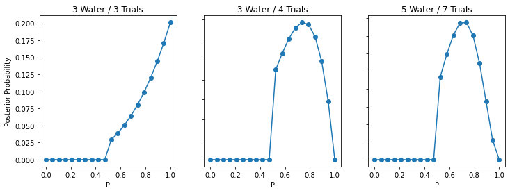
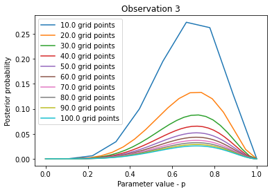

import arviz as az
import numpy as np
import pymc as pm
from matplotlib import pylab as plt
from scipy import statsChapter 2
RANDOM_SEED = 8927
np.random.seed(RANDOM_SEED)# express the above scenarios as the number of waters in each
W = np.array([3, 3, 5])
# give the total number of trials
Total = np.array([3, 4, 7])# Get the plots for each scenario, trying different numbers of grid points for each
for i, j, k in zip(W, Total, range(3)):
for n in np.linspace(10, 100, 10):
# get the grid of parameter values
p = np.linspace(0, 1, int(n))
# compute the likelihood for each value of p, assuming 6 success and 3 fails
likelihood = stats.binom.pmf(k=i, n=j, p=p)
# prior is unif(0,1)
prior = 1
# posterior
post = likelihood * prior
# normalise the posterior
post = post / np.sum(post)
plt.plot(p, post, label=str(n) + " grid points")
plt.title("Observation " + str(k + 1))
plt.xlabel("Parameter value - p")
plt.ylabel("Posterior probability")
plt.legend()
plt.show()

2M2
https://matplotlib.org/stable/gallery/subplots_axes_and_figures/subplots_demo.htmlarray([3, 4, 7])fig, axs = plt.subplots(1, 3, figsize=(20,3))
for i, j, ax, ix in zip(W, Total, np.ravel(axs), range(3)):
p = np.linspace(0, 1, 20)
# compute the likelihood for each value of p, assuming 6 success and 3 fails
likelihood = stats.binom.pmf(k=i, n=j, p=p)
# prior is step function
prior = np.heaviside(p - 0.5, 0.5) * 2
# posterior
post = likelihood * prior
# normalise the posterior
post = post / np.sum(post)
ax.plot(p, post, label=str(n) + " grid points")
ax.scatter(p, post, label=str(n) + " grid points")
ax.set_title("Observation " + str(ix + 1))
ax.set(xlabel="P", ylabel="Posterior Probability")
for ax in axs.flat:
ax.label_outer()